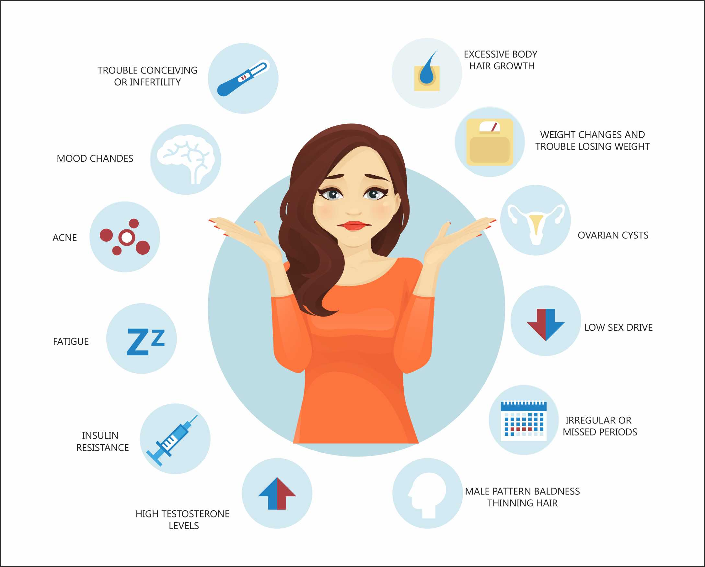

Discover how our platform provides the tools, data, and connectivity you need to manage PCOS with confidence and clarity.

Go beyond simple logging. Our intelligent tracking system helps you identify patterns between your lifestyle, diet, and hormonal fluctuations.
No more paper files. Keep your entire medical history—scans, blood tests, and prescriptions—in one secure, encrypted digital vault.
Connect seamlessly with leading hospitals across Sri Lanka. Share your data securely with your healthcare team for more personalized consultations.
"To bridge the gap in PCOS healthcare in Sri Lanka by providing women with a centralized, secure, and data-driven platform for self-management and clinical coordination."
A future where every Sri Lankan woman with PCOS has the tools and support to thrive, not just survive.
Privacy-first architecture, clinical excellence, and patient-centered design at every step.
Yes, security is our top priority. Your medical records are encrypted and stored following international health data standards. Only you and the hospitals you explicitly authorize can access your records.
Basic features, including symptom tracking and record storage, are completely free for patients. We believe every woman deserves access to these tools.
Once you sign up, you can search for partner hospitals in our directory and request a connection. If your hospital isn't listed, you can still use the platform for self-management.
While optimized for PCOS management, the platform's menstrual tracking and lifestyle logging tools are beneficial for any woman interested in reproductive health optimization.
Our support team is here to help you with any inquiries or platform guidance.
♥ Get in TouchJoin PCOS Care Hub today and start managing your health smarter.